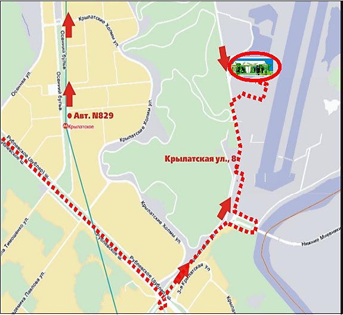

Со стороны МКАД ехать по Рублевскому шоссе в сторону центра, потом направо под мост на улицу Нижние Мневники и перед следующим (вторым) мостом направо под него. Выехать на Крылатскую улицу, через 200 метров, сразу после магазина "Альпин Ямаха" направо въезд на спортивную территорию ( увидите напротив трибуны). Ехать до конца. Ориентир начиная от въезда под второй мост ( на Крылатскую улицу) картинка с приглашения. Самый точный адрес: Улица Крылатская, стадион сразу после дома 8.
